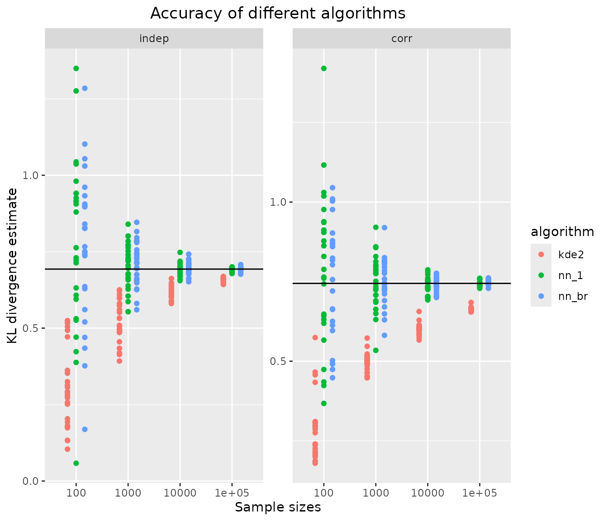
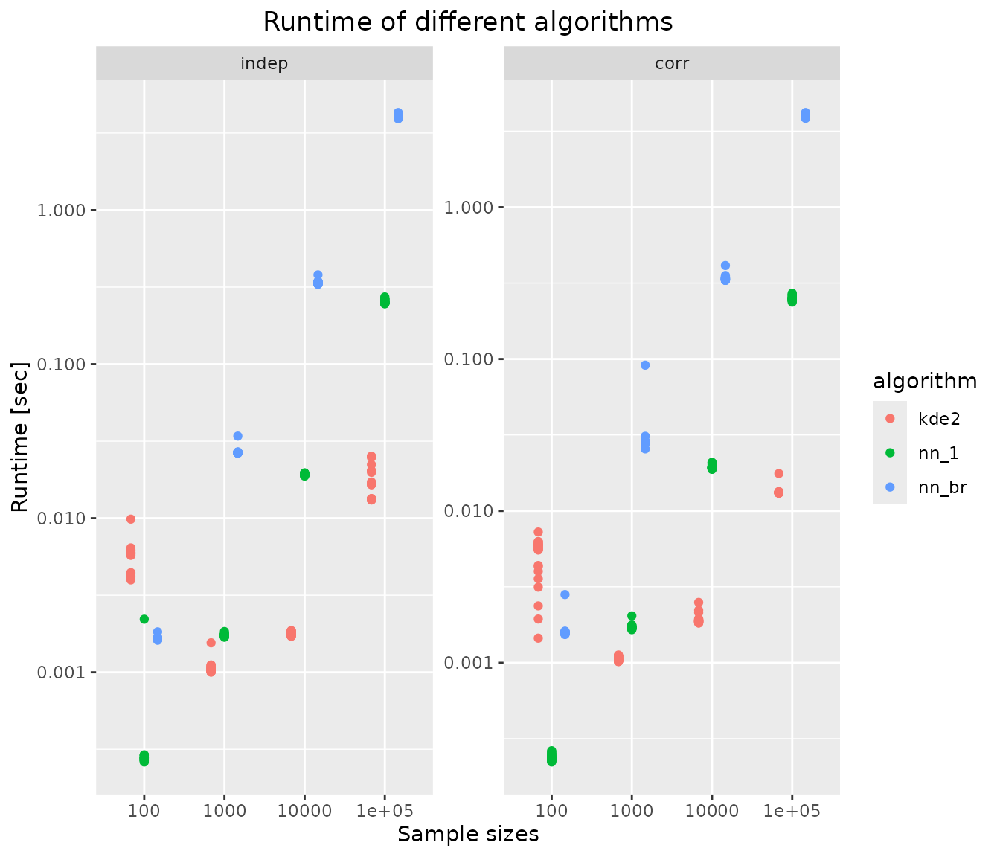

Algorithm benchmark in 2D
Source:vignettes/articles/algorithm-benchmark-2d.Rmd
algorithm-benchmark-2d.RmdIn this benchmark, the performance of different estimators is evaluated in tractable 2-D examples, in terms of their accuracy and runtime.
The nearest neighbour-based KL divergence estimators shown in the 1-D
benchmark are considered again (they are dimension-independent), and a
2-D kernel density-based estimator, relying on package
KernSmooth, is
also evaluated.
Specification of simulation scenario
Distributions and KL-D
We investigate the following pairs of distributions, for which analytical KL divergence values are known:
- vs.  (2D Gaussians, different location/scale, uncorrelated),
- vs.  (2D Gaussians, same location/scale, different correlation strength).
p <- list(
indep = list(mu1 = c(0,0), sigma1 = diag(2),
mu2 = c(1,1), sigma2 = 2*diag(2)),
corr = list(mu1 = c(0,0), sigma1 = constDiagMatrix(dim = 2, diag = 1, offDiag = 0.9),
mu2 = c(0,0), sigma2 = constDiagMatrix(dim = 2, diag = 1, offDiag = 0.1))
)
distributions <- list(
indep = list(
samples = function(n, m) {
X <- MASS::mvrnorm(n = n, mu = p$indep$mu1, Sigma = p$indep$sigma1)
Y <- MASS::mvrnorm(n = m, mu = p$indep$mu2, Sigma = p$indep$sigma2)
list(X = X, Y = Y)
},
kld = do.call(kld_gaussian, p$indep)
),
corr = list(
samples = function(n, m) {
X <- MASS::mvrnorm(n = n, mu = p$corr$mu1, Sigma = p$corr$sigma1)
Y <- MASS::mvrnorm(n = m, mu = p$corr$mu2, Sigma = p$corr$sigma2)
list(X = X, Y = Y)
},
kld = do.call(kld_gaussian, p$corr)
)
)Analytical values for Kullback-Leibler divergences in test cases:
Simulation scenarios
For each of the distributions specified above, samples of different sizes are drawn, with several replicates per distribution and sample size.
samplesize <- 10^(2:5)
nRep <- 25L
scenarios <- combinations(
distribution = names(distributions),
sample.size = samplesize,
replicate = 1:nRep
)Algorithms
The following algorithms are considered:
algorithms <- list(
kde2 = function(X, Y) kld_est_kde2(X = X, Y = Y),
nn_1 = kld_est_nn,
nn_br = function(X, Y) kld_est_brnn(X = X, Y = Y, warn.max.k = FALSE)
)
nAlgo <- length(algorithms)Run the simulation study
# allocating results matrices
nscenario <- nrow(scenarios)
runtime <- kld <- matrix(nrow = nscenario,
ncol = nAlgo,
dimnames = list(NULL, names(algorithms)))
for (i in 1:nscenario) {
dist <- scenarios$distribution[i]
n <- scenarios$sample.size[i]
samples <- distributions[[dist]]$sample(n = n, m = n)
X <- samples$X
Y <- samples$Y
# different algorithms are evaluated on the same samples
for (j in 1:nAlgo) {
algo <- algorithms[[j]]
start_time <- Sys.time()
kld[i,j] <- algo(X, Y)
end_time <- Sys.time()
runtime[i,j] <- end_time - start_time
}
}Post-processing: combine scenarios, kld and
runtime into a single data frame
tmp1 <- cbind(scenarios, kld) |> melt(measure.vars = names(algorithms),
value.name = "kld",
variable.name = "algorithm")
tmp2 <- cbind(scenarios, runtime) |> melt(measure.vars = names(algorithms),
value.name = "runtime",
variable.name = "algorithm")
results <- merge(tmp1,tmp2)
rm(tmp1,tmp2)Convert to factor
Results
Accuracy of KL divergence estimators
ggplot(results, aes(x=sample.size, y=kld, color=algorithm)) +
geom_jitter(position=position_dodge(.5)) +
facet_wrap("distribution", scales = "free_y") +
geom_hline(data = kldtrue, aes(yintercept = kld)) +
xlab("Sample sizes") + ylab("KL divergence estimate") +
ggtitle("Accuracy of different algorithms") +
theme(plot.title = element_text(hjust = 0.5))
all estimators converge towards the true KL divergence (black solid line). Whereas both nearest neighbour-based estimators are unbiased, the kernel density-based estimator has comparable variance but considerable bias for smaller samples.
Runtime of KL divergence estimators
ggplot(results, aes(x=sample.size, y=runtime, color=algorithm)) +
scale_y_log10() +
geom_jitter(position=position_dodge(.5)) +
facet_wrap("distribution", scales = "free_y") +
xlab("Sample sizes") + ylab("Runtime [sec]") +
ggtitle("Runtime of different algorithms") +
theme(plot.title = element_text(hjust = 0.5))
The kernel density-based estimator, which use
KernSmooth::bkde, is more than 10-fold faster than nearest
neighbour-based estimators for large samples. However it is also much
less precise.